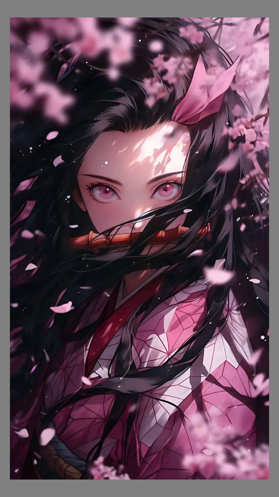

I am a big fan of Anime and enjoy reading Manga. I enjoy
cooking, I love West Indian and Asian cusine, but I will
certainly welcome a bowl of Ramen anyday.I am currently
in Grad School to continue to grow in my new career
path. As well as, Matcha is life.
Pictures describing what makes up who I am... My interests, hobbies, career growth, well just a little about me....
Stories
Anime | Manga
I have been a huge fan of various Anime and Manga from
my early teens. They literllay touch the soul and bring
people from all walks of life together sharing so many
differnet emotions but still resonating and appreciating
the stories they tell.It can provide insight to a
different culture, can be comforting, inspiraitonal, a
visual storytelling, help bloom the imagination, and
even emotional support. A feel good anime | manga can
bring a smile to your face and make you laugh from the
depths of your soul.

Favorite characters from some of my favorite Anime
Cooking | Favorite Food
I enjoy cooking a variety of West Indian dishes as that
is my culture and especially seafood. I deeply enjoy
various Asian cuisines as well. However, I love sushi
with every fiber of my being and will eat it any time of
the day. In addition, a good Ramen cures the soul after
a hard day.
Favorite dishes and of course Ramen is life 🥰
Grad School | Matcha
I am currently in Grad school focusing on growing in my new career path and Matcha is essential and helps me code through the day and do my absolute best in my classes and studies. I know all my hardwork will pay off and I feel so happy when I see my code come to life.